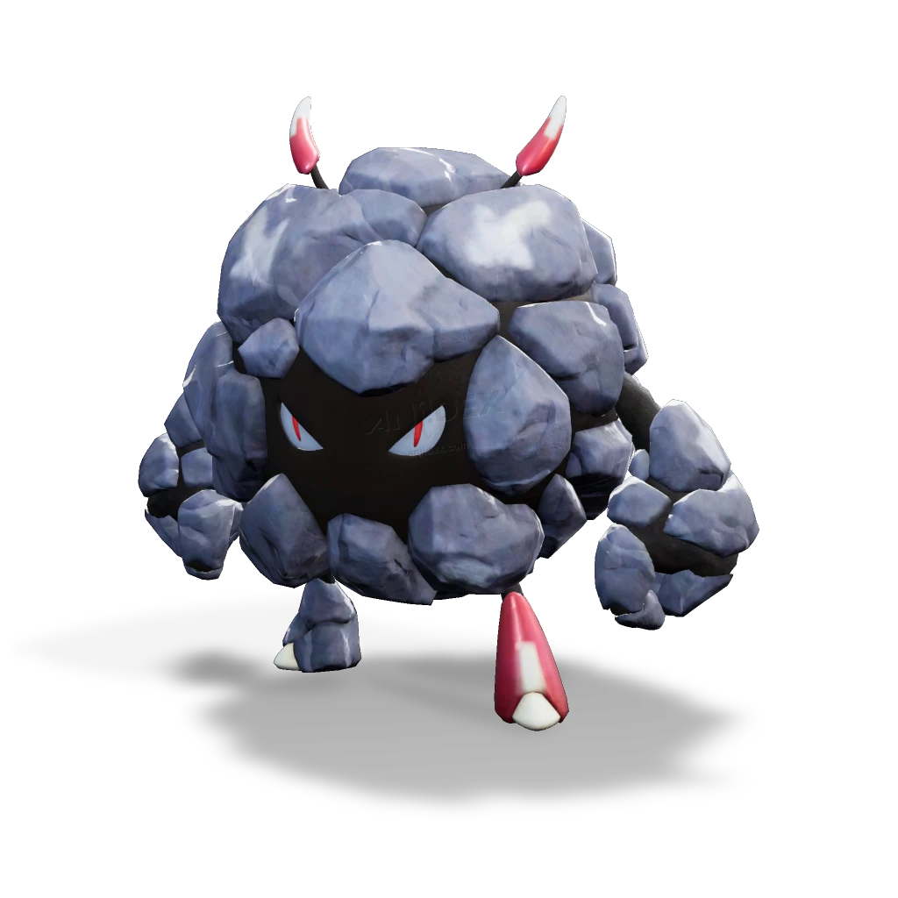

รายชื่อ Aniimo › #058

แมลงหินกลม (Bouldus)
#058ธาตุดินNovaSupportTier C
ก้อนหินที่อยู่กับด้วงกลิ้งหินทั้งวันทั้งคืน วีนหนึ่งมันเกิดมีจิตสำนึกขึ้นมาหลังจากถูกกระแทกอย่างแรง มันเบื่อที่จะถูกควบคุม จึงกลืนด้วงกลิ้งหินเข้าไปตัวหนึ่ง และในที่สุดก็สามารถเคลื่อนไหวได้ตามใจชอบ
ดูรายละเอียดเต็ม ร่างพิเศษ และร่างเปล่งประกายค่าสถานะพื้นฐาน
| HP | 91 |
|---|---|
| ATK | 114 |
| P.DEF | 101 |
| M.DEF | 54 |
| REGEN | 104 |
| BREAK | 52 |
สกิล
| โจมตีปกติ | ATK ดิน ใช้พลังแห่งดินโจมตีเป้าหมายในระยะใกล้ |
| สกิล 1 | Rock Tackle ดิน ชาร์จพลังอยู่กับที่ชั่วครู่ แล้วพุ่งชนเป้าหมายเต็มแรง สร้างดาเมจและสร้าง [กองหิน] 4 กองรอบเป้าหมาย |
| สกิล 2 | Rolling Ball ดิน แปลงร่างเป็นลูกบอลที่เคลื่อนที่ไปข้างหน้าโดยอัตโนมัติเป็นเวลา 15 วินาที โดยสามารถปรับทิศทางได้ การโจมตีโดนศัตรูจะทำดาเมจ เมื่อกระเด้งชนกำแพงออกมาจะสร้างดาเมจเป็นวงกว้างแก่เป้าหมายที่อยู่ใกล้เคียงเท่ากับพลังอำนาจ 15 หน่วย สามารถกระโดดได้ในรูปแบบลูกบอลกลิ้งทลาย ซึ่งจะสร้างดาเมจเป็นวงกว้างเท่ากับพลังอำนาจ 20 หน่วย เมื่อลงพื้น คูลดาวน์การกระโดด: 5 วินาที |
| สกิล 3 | Clay Ball ดิน ขว้างบอลดินเป็นเส้นตรงไปยังด้านหน้า เมื่อโดนเป้าหมายจะสร้างดาเมจและทำให้ติดเอฟเฟกต์เสื่อมสลาย |
| อัลติเมต | Boulder Blast ดิน หมุนอย่างรวดเร็วไปตามพื้น กวาดเอาเศษซากต่างๆ เข้ามาก่อนจะระเบิดอย่างรุนแรง เมื่อระเบิดจะทำดาเมจเป็นวงกว้างและสร้าง [กองหิน] 6 กองรอบแมลงหินกลม |
สายวิวัฒนาการ
- ด้วงกลิ้งหิน → แมลงหินกลม (แอนีโมเลเวล 39, เรียนรู้พรสวรรค์ติดตัว [บอลหินประหลาด], เอาชนะแมลงหินกลมอัลฟา)
จุดเกิด
- Berylline Vale Lv. 40–47
Held Item ที่แนะนำ
- Spirited Feather แอนีโมที่ติดตั้งจะได้รับพลังฟื้นฟูเพิ่ม 0.7 หน่วยต่อเลเวล
- Auspicious Bell เมื่อใช้สกิล มีโอกาส 20% ที่จะได้รับ 5 EP
งานใน Homeland
งานธาตุดิน Lv.3, ขนของ Lv.3